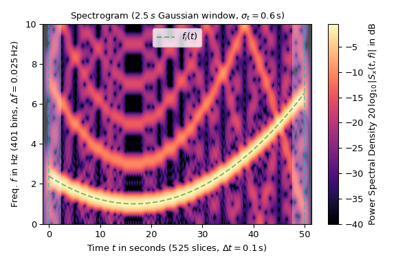

The spectrogram is the absolute square of the STFT, i.e., it is
abs(S[q,p])**2 for given S[q,p] and thus is always
non-negative.
For two STFTs Sx[q,p],Sy[q,p], the cross-spectrogram is defined
as Sx[q,p]*np.conj(Sy[q,p]) and is complex-valued.
This is a convenience function for calling stft /
stft_detrend, hence all parameters are discussed there. If y is not
None it needs to have the same shape as x.
The following example shows the spectrogram of a square wave with
varying frequency \(f_i(t)\) (marked by a green dashed line in the
plot) sampled with 20 Hz:
>>> importmatplotlib.pyplotasplt>>> importnumpyasnp>>> fromscipy.signalimportsquare,ShortTimeFFT>>> fromscipy.signal.windowsimportgaussian...>>> T_x,N=1/20,1000# 20 Hz sampling rate for 50 s signal>>> t_x=np.arange(N)*T_x# time indexes for signal>>> f_i=5e-3*(t_x-t_x[N//3])**2+1# varying frequency>>> x=square(2*np.pi*np.cumsum(f_i)*T_x)# the signal
The utilized Gaussian window is 50 samples or 2.5 s long. The
parameter mfft=800 (oversampling factor 16) and the hop interval
of 2 in ShortTimeFFT was chosen to produce a sufficient number of
points:
>>> g_std=12# standard deviation for Gaussian window in samples>>> win=gaussian(50,std=g_std,sym=True)# symmetric Gaussian wind.>>> SFT=ShortTimeFFT(win,hop=2,fs=1/T_x,mfft=800,scale_to='psd')>>> Sx2=SFT.spectrogram(x)# calculate absolute square of STFT
The plot’s colormap is logarithmically scaled as the power spectral
density is in dB. The time extent of the signal x is marked by
vertical dashed lines and the shaded areas mark the presence of border
effects:
>>> fig1,ax1=plt.subplots(figsize=(6.,4.))# enlarge plot a bit>>> t_lo,t_hi=SFT.extent(N)[:2]# time range of plot>>> ax1.set_title(rf"Spectrogram ({SFT.m_num*SFT.T:g}$\,s$ Gaussian "+... rf"window, $\sigma_t={g_std*SFT.T:g}\,$s)")>>> ax1.set(xlabel=f"Time $t$ in seconds ({SFT.p_num(N)} slices, "+... rf"$\Delta t = {SFT.delta_t:g}\,$s)",... ylabel=f"Freq. $f$ in Hz ({SFT.f_pts} bins, "+... rf"$\Delta f = {SFT.delta_f:g}\,$Hz)",... xlim=(t_lo,t_hi))>>> Sx_dB=10*np.log10(np.fmax(Sx2,1e-4))# limit range to -40 dB>>> im1=ax1.imshow(Sx_dB,origin='lower',aspect='auto',... extent=SFT.extent(N),cmap='magma')>>> ax1.plot(t_x,f_i,'g--',alpha=.5,label='$f_i(t)$')>>> fig1.colorbar(im1,label='Power Spectral Density '+... r"$20\,\log_{10}|S_x(t, f)|$ in dB")...>>> # Shade areas where window slices stick out to the side:>>> fort0_,t1_in[(t_lo,SFT.lower_border_end[0]*SFT.T),... (SFT.upper_border_begin(N)[0]*SFT.T,t_hi)]:... ax1.axvspan(t0_,t1_,color='w',linewidth=0,alpha=.3)>>> fort_in[0,N*SFT.T]:# mark signal borders with vertical line... ax1.axvline(t_,color='c',linestyle='--',alpha=0.5)>>> ax1.legend()>>> fig1.tight_layout()>>> plt.show()

The logarithmic scaling reveals the odd harmonics of the square wave,
which are reflected at the Nyquist frequency of 10 Hz. This aliasing
is also the main source of the noise artifacts in the plot.